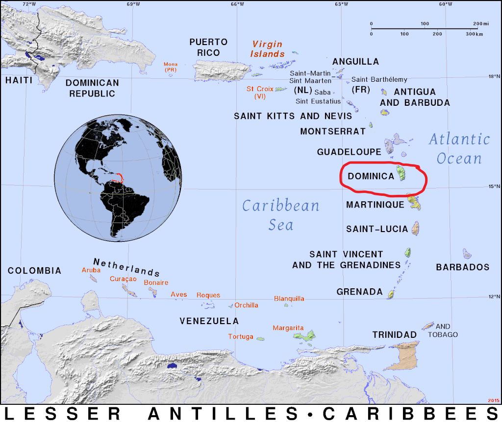
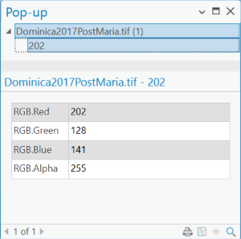
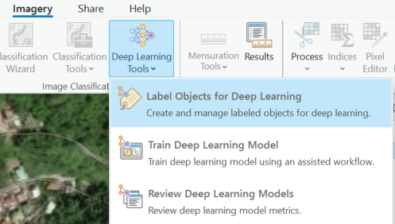
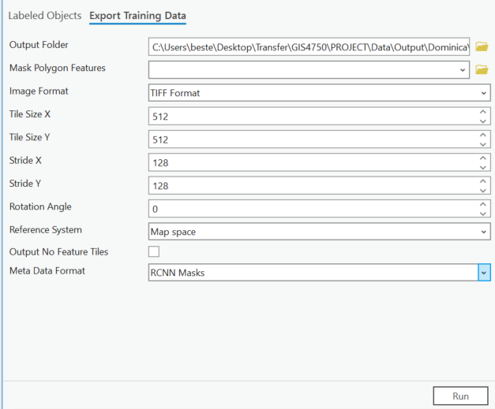
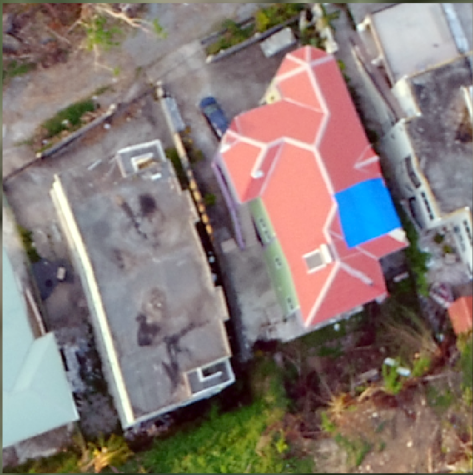
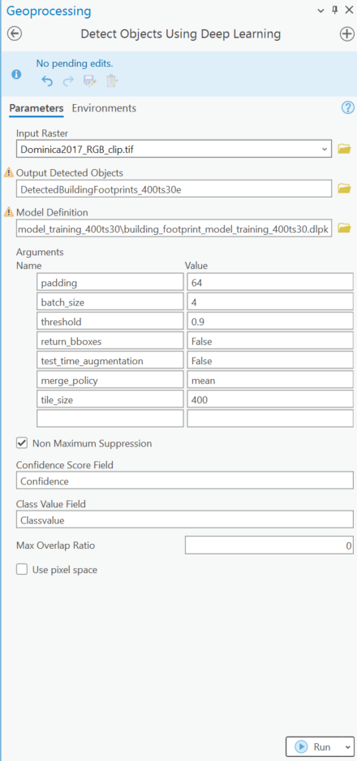
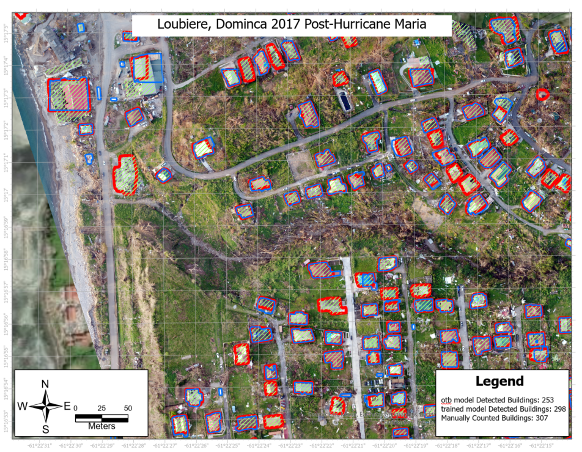

Disaster in Dominica
On September, 18th 2017 Hurricane Maria made landfall on the small caribbean island of Dominica as a Category 5 with 167 mph winds. The storm was rare in the speed at which it went from Category 3 to 5 in less than 24 hours -- giving islands residents around 2 hours of notice. The storm struck at night and by the next morning it had decimated the island's infrastructure, buildings and forests. 100% of island's 73,800 residents were affected. The entire island lost power. 90% of buildings were damaged due to intense rainfall, flooding, and landslides. The lush green forests were mostly damaged, including trees being uprooted, snapped or shredded making its landscapes barely recognizable Dominica Images post hurricane Maria.
Damage assessment of the ~30,000 buildings on this 750 sq. km island nation took 3 months to complete. 140 public servants and volunteers used tablets and other traditional ground-based structural data collection methods. These assessors categorized and documented the degree of damage by the level of roof damage. They found ~75% of buildings to have 25% or more of the roof damaged, including ~20% that were totally destroyed.
The scale and intensity of such a disaster requires a more efficient and safe means of damage assessment. Ultimately, prolonged damaged assessment times delay response times and repairs. The hazards of navigating a damaged landscape and challenging terrain may also lead to inconsistent documentation preventing appropriate resource allocation and planning.
The goal of this blog post is to provide a high-level tutorial using Esri's deep learning model tools so that you might be able to perform your own building damage assessments in the wake of a disaster. We will start with a UAV image dataset that has been processed into a 2D orthophoto of Dominica post-Maria and load that image into ArcGIS Pro. You can find that image here if you want follow the walkthrough Download the image data
User Requirements / (My local system environment)
- ArcGIS Pro (3.3)
- ArcGIS Pro Image Analyst (Yes)
- Deep Learning Libraries Download here (Deep Learning Libraries Installer for ArcGIS Pro 3.3)
- NVIDIA GPU (NVIDIA GEForce RTX 1750 GPU)
- Computer (Dell G5 i7)
What are Deep Learning Models?
Deep Learning is a sub-discipline in the larger field of Artificial Intelligence (AI) that studies various ways to have computers perform tasks requiring human intelligence. It is a type of Machine Learning (ML), where the computer program is trained with examples to learn to identify patterns. In contrast to ML, Deep Learning (DL) has a higher capacity to learn complex patterns. This comes from the way in which DL models use algorithms called neural networks that are structured in a layered interconnected network of nodes. Each node performs calculations on inputs from the prior layer of nodes, and each layer of nodes builds on the learned patterns in the previous layer, allowing the network to learn increasingly more complex patterns. If we think of an image detection DL network trained to recognize cave entrances, a simple arch pattern could be learned in the first layer. As DL model builds on this layer it goes into deeper layers with each resolving more complex patterns. The final layer has learned a 'deep' representation of the data that has all the features needed to detect a cave entrance.
Extract Building footprints in ArcGIS Pro
We start with Esri's pre-trained DL models in ArcGIS Pro to extract building footprints in our disaster site imagery. Pre-trained DL models are ready-to-use DL models built for a specific task, such as land-cover classification or detection objects. By using these pt-DL models we greatly reduce the burden of manually digitizing features and the time it takes to train, and iteratively test it from scratch to achieve high accuracy. This greatly speeds up the workflow and these 'out-of-the-box' pt-DL models may do very well. In our case, the relevant pt-DL model is the Building Footprint Extraction model available on Esri's ArcGIS Living Atlas (Download here). Building footprint extraction will create features that identify the buildings in the study area, which is critical to assess which ones are damaged. Download the model and move it to a folder that will hold all your pt-DL models.
This pt-DL models work well when the your imagery is similar to the those used to train the model. So, it is key to understand what type of image the model is expecting. This enables us to know whether and how to modify our own input imagery --if needed. 
The pt-DL model expects input in the form of 8-bit imagery with 3 bands. Additionally, the input should have a resolution of 10-40 cm, meaning that each pixel in the image represents area of 10-40cm by 10-40cm on the ground. The range rather than single value suggests that the model was trained on imagery of different resolutions (i.e., From 10-40cm). The output will be a newly created feature class with polygons around buildings. Not mentioned here is the expectation that you have nadir or birds-eye-view image. This is in contrast, to angled imagery from street view camera which will not work well. The expected geography is US but it can work well elsewhere. Model Architecture is Mask RCNN. The average precision shown here is ~72% and elsewhere the same is shown as 79%, meaning ~70-80% of the objects the model detects as buildings are in fact buildings and 20-30% are not actually buildings.
The key here is that each DL model has its own metadata or image formatting and labeling requirements. So, we note the model name and use that to select a compatible metadata format later in the tutorial. To have the optimal building detection result, first we need to verify and/or modify our input image such that it aligns with these formatting requirements.
Matching your Image Properties to the Model
Drag and drop the .tif imagery onto the map in ArcGIS Pro. Go to the contents and navigate to the image properties. Note the number bands is 4. For RGB UAV images like the DJI drone used in this case, the 4th band is the alpha channel that represents the transparency level of each pixel. A pixel with an RGBA value of 0 is fully transparent, whereas one with a value of 255 is fully visible. So, if the pixel is a value of 0 it will be invisible and instead reveal the layer beneath it. Try clicking on various places in the image and you will notice that all pixels have a value of 255 for the RGBA band, meaning that all pixels are fully visible. We need to remove this additional band information from the image. 
The other difference is the input image cell size of ~4.7 cm which is different than what the model expects. In our case, we will not modify resolution as it is not drastically different from 10 cm. But this input cell size is important to note down for later in the process.
The typical way to address the format issues is use ArcGIS Pro's Raster Function Extract Bands on your input TIF image. In the geoprocessing window you would input the values of the bands your in your image and set the Missing Band Action parameter to fail to ensure you correctly extracted 3 bands. After this step, you would then need to save that result because raster function outputs are temporary. To do that you would right-click on the new raster in your contents pane, select Data, and use Export Raster to save it permanently as TIF. However, here I want to advocate for automating this band extraction process and other aspect of the workflow using python scripting and the arcpy library.
What is Arcpy?
Arcpy is a Python library for automating GIS tasks in Arc GIS Pro. It allows you to perform geoprocessing, analysis , data management and mapping automation using python.
Here is a script that would accomplish both these tasks : extracting bands and saving a properly formatted new TIF. This script will function as a new tool allowing you to interact with it inside ArcGIS Pro just like other geoprocessing tools. This means you can re-use it, change the inputs, file names and folders.
### This script automates Raster conversion and formatting for generating 8-bit 3-band TIF Files
import arcpy
import os
###================== Set up folders and settings
# set input raster, output folder and raster name
input_raster = arcpy.GetParameterAsText(0) # get input raster path
output_folder = arcpy.GetParameterAsText(1) # get output folder
output_raster_name = arcpy.GetParameterAsText(2) # get the raster name
# combine to make output file path
output_raster = os.path.join(output_folder, output_raster_name+ ".tif")
# Set environment workspace and enable output overwrite option
arcpy.env.workspace = output_folder
arcpy.env.overwriteOutput=True
###================== Extract bands and save the raster as 8-bit TIF
try:
extracted_raster = arcpy.ia.ExtractBand(input_raster,[1,2,3],missing_band_action='Fail' )
# save the output raster temporarily
temp_raster = "in_memory\\temp_raster"
extracted_raster.save(temp_raster)
# resample to 0.1 meter per pixel
resampled_raster= os.path.join(output_folder,"resampled_temp.tif")
arcpy.management.Resample(temp_raster,resampled_raster,cell_size="0.1", resampling_type="BILINEAR")
# copy to specify the no data value converting 0,0,0 pixels to NoData rather than 0,0,0 pixel appearing as black after removing the alpha channel
# convert to 8-bit unsigned with proper scaling if not already done.
arcpy.management.CopyRaster(resampled_raster,output_raster,pixel_type="8_BIT_UNSIGNED", scale_pixel_value="ScalePixelValue",nodata_value=0, format="TIFF") # no data value is 0, change if your no Data value is different
# Display the output in ArcGIS
arcpy.SetParameterAsText(3,output_raster)
# add success message (green text) to show it completes
arcpy.AddMessage(f"Saved resampled raster with NoData value applied at {output_raster}")
except Exception as e:
arcpy.AddError(f"Error processing raster: {str(e)}") # critical errors that cause failure (red text)
arcpy.AddMessage(arcpy.GetMessages()) # show all messages, missing inputs, updates, success messages
After creating this script and saving it as a .py file in your project folder you would need to load it into your toolbox in ArcGIS Pro and set up parameter labels and datatypes (See here for details).
Once that is done the tool is ready to use. To use the python script tool, you need to double-click on the python tool icon, enter the required parameters and click run, as you would any geoprocessing tool.
If you would like to try it out here is the zipfile with toolbox, python script and a readMe for instructions Download ArcGIS toolbox.
Transfer Learning
Transfer learning is a ML technique where knowledge from one task is applied to another related task to boost performance.
In our case, the pt-DL model's original task was detecting buildings using 10-40cm imagery in the US.
Now we want to apply it to 5 cm imagery in Dominica. Transfer learning allows us to reduce the samples needed to train a DL model and speeds up the process.
Label Building footprints
Now we label the buildings in the image to create training samples for the building footprint model. For this we go the the imagery Tab in ArcGIS Pro and select DeepLearning Tools.

This tool will allow you to create polygon training samples and export them in the format required by the model.
When prompted, select 'Label Using Existing imagery Layer' and then select your TIF as the input. Give the training samples a name and then use the polygon tool to manually label your samples.
As these building footprint samples will form the basis for our damage classification and we are using less than ideal post-damage imagery, we will label all ~300 buildings.
Tip : Be sure to be as accurate as possible when creating the labels. Also, if leaving some portion of the image unlabeled, use only the labeled extent for creating the samples
Create a Geodatabase for your project and store the training samples in it. Add the training sample feature class to the map.
Open the attribute tables, add a new field called Class with datatype Short (integers) and populate all entries with a value of 1.
In our case, there is only one category of object or class building footprints. However, there could be multiple classes created, if interested in detecting distinct objects (cars, buses, lamp posts).
The pt-DL model expects one class to identify all objects of the same class. The Class field will tell the model that all objects with a value of 1 are the in the same category i.e., building footprints.
Note: If you decided to use the above provided custom toolbox for raster reformatting, it also has the option to use a Model Builder workflow that combines reformatting and creating a new feature class. It will both create the reformatted raster and create a new feature class ready to be populated with your manually digitized buildings. In that case, to digitize training samples for pt-DL model, you would not use the Deep Learning tools in the imagery tab, instead run the Model Builder workflow, and load and select your new polygon feature class. Select the Create Features tool in the Edit tab, begin by digitizing the first building and populating your first digitized feature with a class value and class name as 1. This way all following features will have the same values. After creating the samples, you would use the same parameters to export them as shown above but using the geoprocessing tool Export Training Data for Deep Learning Tool.
Optionally, Clip your image to the Labeled Samples
If your labeled samples do not span the entire image or you have objects without labels, use the Clip Raster Tool with the TIF as input and extent set using your labeled training samples
Transfer Learning
Export the Training Data
Not that the samples are created, we export the samples in the correct size and format for our particular DL model. Select the Export training Data tab.

DL models in ArcGIS Pro train on images after breaking them into parts called image chips. These image chips are what the model will see and each one of those chips is has two associated files: an image file and corresponding label file. The label shows the model where the objects are in the image.
An important parameter to consider is the size of the chips entered in the Tile size parameter. This tile should be large enough to fully enclose multiple objects that you want to detect i.e., multiple buildings.
The tile size is measured in pixels. To figure out what your tile size is, use the measure tool to measure the length of objects in your input image. Note down the length in meters of the longest object you measured.
Use the following formula to find the pixel size:
Building Length in Pixels = Building Length in Meters / Image resolution in Meters Per Pixel
EXAMPLE: longest building length = 36 , image resolution = 0.047 meters per pixel
38 m / 0.1 m /px = 380 pixels
Dynamic Tile Size Visualization
Tile Size Simulator
Recommended Tile Size: 512 x 512 pixels
Although, DL models have standard image sizes they work best with, which are 128, 256, 512, 1024 pixels. There is evidence from the Esri developer community that non-standard tile sizes work.
This suggests that some empirical testing of different tile sizes might be necessary. Long story short. 256 tile size does very well for normal residential buildings but not for larger commercial buildings. So, for our case where we have wide distribution of sizes the max of which is 380 pixels, we use 400 x 400 tile size. This enables us to fully enclose most buildings in our image chips. Since the majority of buildings are residential houses this should work well.If the opposite were true with most being large commercial buildings or warehouses we would need to use 512 or larger.


Next we choose a stride size which indicates the distance to move in pixels for each new image chip, thereby controlling overlap between images. Here we will follow a rule of thumb based on prior examples using stride size of 25% the tile size. That works out to 64 pixels.
Since, we are using an RCNN Mask DL model so we select the metadata format RCNN Masks. The metadata stores each building object's segmentation mask (pixel accurate object outline) as polygons within the image and tells the model how to interpret object locations in each tile. The map space parameter is important for converting the pixel-based segmentation masks on the image to
georeferenced vector data, enabling the model to map masked objects to their geographical locations
Then we run the tool to export these training samples.
Custom Building Footprint Extraction Model Inference Result:
We now have created a DL model that is fine-tuned to our data. Here we call this model : Dominica_10cm_BuildingFootprint_model.
Use the 'Detect Objects Using Deep Learning' tool in ArcGIS Pro. We will input our image, select the new fine-tuned DL model, and assign name for the output building footprint feature class. Here is a view of the tool and settings used.

Now, let's see how well the custom model detects buildings.

| Approach |
counts |
% Detected |
| pt-DL otb Model |
253 |
82% |
| fined-tuned pt-DL Model |
298 |
97% |
| Ground truth Buildings |
307 |
100% |
The results show that training the out-of-the box USA Building footprint model improved the results. 298 of the 307 buildings that were digitized manually were successfully detected after training the model.
Key to this improvement was the model training on samples from this new geography and different resolution. However, there still are issues with false positives, such as detection of a pool but this was limited to one instance in this imagery. It could be that in an image with many large pools the model may have more false positives. The model also did not detect some of the objects that were smaller than residential buildings (e.g., sheds).
Altogether, training the USA building footprint model with our imagery improved its capability with minimal negative impact on false positives.
Sources: ^1 DominicaNewOnlines 2018. https://dominicanewsonline.com/news/undp/undp-news/building-damage-assessment-in-dominica-bda/
^2 Improve a deep learning model with transfer learning 2024. https://learn.arcgis.com/en/projects/improve-a-deep-learning-model-with-transfer-learning/